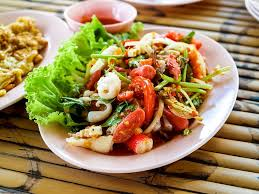

according to many sources, ranking somwhere between top 1-10, most people consider sushi to be the best food in the world. Prepared with rice and many ingrediants including seafood and vegetables. One popular garnish for this dish is Daikon radish.
(hover to enlarge) Image from: PickPik, royalty-free phto, unknown author.
2. Rendang (Indonesia)
Some people call Rengdang "the world's most delicious dish" due to it being prepared by simmering beef, coconut milk and a mix of some really great spices like garlic, ginger, chillies, and more! The huge amount of falvors is most definitely one of the top reason why it is consider as one of the best dished in the world. It is normally served at ceremonies.
(hover to enlarge) Image from: Wikimedia Commons, unknown author.
3. Ramen (Japan)
Ramen is a dish from Japan that contains wheat, noodles, and served in broth with vegetables and meat. Ramen can come in multiple flavors, spicy, sweet, tangy, etc. There are 2 types of ramen, there is packed soup ramen and regular noodle ramen server with many other yummy toppings. The most popular ramen is the Maruchan pakcked ramen noodle soup chicken flavor.
(hover to enlarge) Image from: Pexels, by an unknown author.
4. Tom Yum Goong (Thailand)
A tpye of hot and sour soup from Thailand, Tom yum goong is made with shrimp with lots of healthy spices. Like lemongrass, lime, galangal, and red chili peppers, thats not even all. The soup has lots of flovors, spicy, sweet, salty. The soup is topped with coconut milk and ream. This dish is very popular all over Thailand.

(hover to enlarge) Image from: Rawpixel, unknown author
5. Kebab (Turkey)
This dish is pretty popular across the Middle East. Kebabs originated in Turkey. They have ground meat, seafodd, fruits, and vegetables and sometimes are cokked on a skewer with a fire under. It is cooked with many ingrediants like garlic, black pepper, and vegetable oil. Other recipes include, beef, goat, fish, and chicken. This dish has so many flavors making it one of the best in the world.